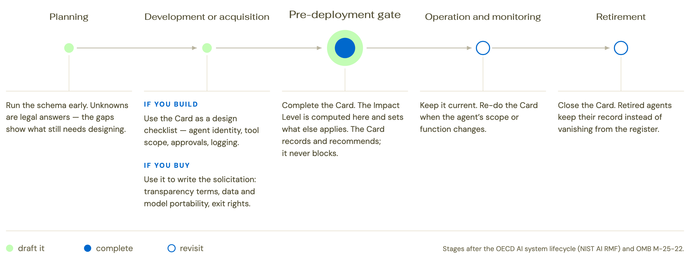
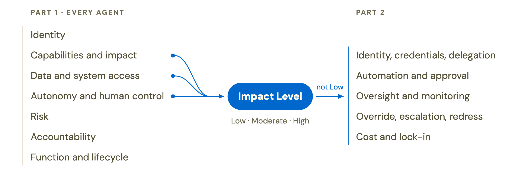
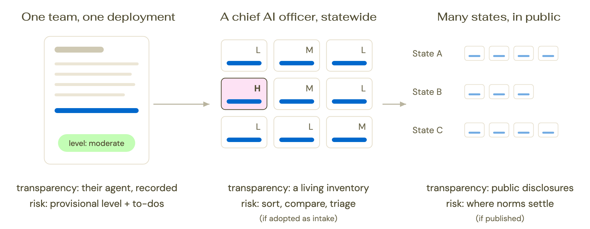
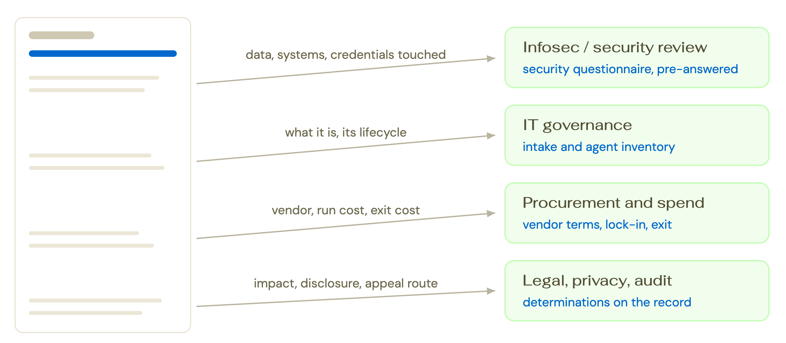

State governments are moving past chatbots into agentic AI: software that acts. Agents can use tools, touch data, receive and send files, and complete multi-step tasks with autonomy. Yet the IT governance machinery states rely on today, including intake, security review, procurement, and audit, wasn't built for software that acts. The introduction of agents in government presents governance challenges.
A first central step to address them is to ensure visibility and transparency on what agents do in public organisations. What is an agent allowed to do? What did it touch? Who answers for it? How does a person step in? And what does it cost to leave? These are questions that cannot and should not be avoided.
The Agent Governance Card was developed by The Agentic State and Center for Civic Futures to help teams address these questions. It exists to assess and record information, bringing structured, comparable transparency to agentic deployments that interact directly with the public or materially influence a decision affecting the public or state resources.
Most often a product team, the people who build or configure the agent. A CIO's office, a procurement officer, or an auditor may also fill one in. When a vendor is engaged, the accountable public agency fills it.
Most often before an agent gets production access to state data, tools, or users. Also earlier, as a checklist during development, or later, for systems already live. Once filled, the card is revisited on a rolling basis.
A snapshot of one deployment: capabilities, data used, who answers for it, how a person steps in, and more. From the answers, the card computes an Impact Level that routes the deployment to proportionate obligations.
The backbone of the card is its schema. It builds on the governance frameworks that matter most for public deployments, including OMB's memoranda on AI use and procurement, the UK's Algorithmic Transparency Recording Standard and NIST's AI Risk Management Framework, and on frontier research on agents: identity and delegation, autonomy and reversibility, the cost of leaving a vendor.
The schema is composed of twelve dimensions, spanning what an agent does and touches, who answers for it, its risks, and more. Across them, 47 fields: for each, the plain-language question a team answers, the values an answer can take, and the rationale behind the field. Fourteen fields, plus the Impact Level, form the public layer, marked with a triangle (▲), the set of information that would be ideally made public.
The schema can be filled in two ways. Teams can work through it by hand, or fill it interactively by running the skill, which acts as the interviewer: it asks the questions one at a time, helps with the hard ones, computes the Impact Level, and emits the filled card. The skill installs in any assistant that supports the open Agent Skills standard, and can be opened directly in the repository of the agent being built, where it reads the answers from the specs and code already there.
The full document brings everything on this site together with the rationale behind every field, guidance on what evidence to use and who should fill in the card, and answers to common questions. Download the full document (PDF, 1.5 MB).
Governments are moving past chatbots into agentic AI: software that combines the intelligence of LLMs with the ability to act in real systems. Agents can use tools, touch data, send messages, file records, and complete multi-step tasks autonomously. This opens the door to more efficient, effective, and tailored public services. It also raises a governance problem. When agents perform functions traditionally performed by public servants, they carry none of the legal accountability attached to a person. The intake, security review, procurement, and audit machinery states lean on today wasn't built for software that acts. The first requirement to address this is transparency: visibility, inside and outside government, on what agents are doing.
The Agent Governance Card serves this purpose by guiding government teams deploying agents to surface the information that governance depends on. It is structured around a schema of twelve dimensions, spanning the agent's connection to citizen data through to its oversight structure and override paths.
The Card brings structured, comparable transparency to agentic deployments that interact directly with the public or materially influence a decision affecting the public or state resources. It is to be used most prominently before deployment, as the record a team completes before an agent gets production access to state data, tools, or users. It also works earlier, during design and development, helping teams settle a governance approach as they build, and later, for live deployments whose details are not yet visible or are recorded without structure. Where it sits in a state's own process is the state's call: some will attach it to procurement, some to the pre-production review, some to both. The diagram below maps the Card onto the phases of an agent's lifecycle and marks the points where filling it can be most useful.

The Card records governance information and recommends. It is a voluntary instrument and its recommendations become gates only where an adopting authority, like a state CIO or an agency directive, decides a completed Card is a precondition for production access. When several states fill out the same Card, their deployments start to become comparable.
The Card borrows its record shape from four transparency instruments: the UK's Algorithmic Transparency Recording Standard, Canada's Algorithmic Impact Assessment, the EU AI Act, and the two US federal memos on AI use and AI procurement (OMB M-25-21 and M-25-22). It takes its agent-specific concepts, such as agent identity, delegation, automation boundaries, and oversight cadence, from NIST, the Cloud Security Alliance, the A2A and MCP protocol specifications, and recent academic work on agent governance.
The two federal memos are the primary reference models, so a state's Cards roll up against the federal vocabulary. The rationale of each field in the schema names the precedent behind it.
The Card has twelve dimensions. The first seven (Part 1) apply to every agent, and six of those answers compute its Impact Level. If the level is not Low, the remaining five dimensions apply (Part 2), asking for more detail on the risk surface of the deployment.

In total, the Card has forty-seven fields. Nine of them take a fixed list of values and, together with the Impact Level, make Cards comparable across states: agent type, capability, high-impact determination, data sensitivity, autonomy level, reversibility, consequence severity, government function, and lifecycle stage.
Fourteen fields are marked with a triangle (▲). These are the fields that, with the Impact Level, form the information that would at minimum ideally be made public: name, what it is, purpose, agent type, location, autonomy level, accountable owner, deploying agency and contact point, government function, lifecycle stage, public summary published, disclosure, appeal route, and who is affected.
The level is computed deterministically from six answers, so that the same answers always give the same level:
The final Impact Level is the higher of the two results and can be Low, Moderate, or High. Low Impact deployments are invited to fill Part 1 only. Moderate Impact deployments are also invited to complete Part 2. When the level is Moderate only because an answer is unknown, Part 2 narrows to two dimensions, automation and approval detail and oversight and monitoring. High Impact deployments are invited to complete both parts but also follow the OMB M-25-21 minimum practices for high-impact AI: pre-deployment testing, a documented impact assessment, independent review, ongoing monitoring with periodic human review, operator training, a tested fail-safe, an appeal route, a public feedback channel, and named senior sign-off.
A filled Card belongs, at minimum, in the state's internal register of agents. We recommend also publishing the public layer, the fourteen ▲ fields plus the Impact Level, so the public can see what agents their government is running. As more states publish, the comparative picture across states that no one has today begins to form.
The card is designed to record what is true at go-live, so it should be filled from production materials rather than from the team's description of the system wherever possible. That key evidence comes from three sources:
Using the skill. When filling the card using the skill through a coding agent, connect the agent's own repository first (including infrastructure-as-code and deployment config, not just application code). Add an evidence folder with the documents above, or read-only access to where they live: the IAM directory, the CMDB or application portfolio, the contract register, and the AI inventory.

The team. The core user is the team that builds, procures, or operates the agent: the product owner, the engineers or the integrator's staff, and the official who will be named as accountable owner (6.1). For them, the Card is a structured way to see their own deployment as a whole. A team filling in the card should bear in mind that gaps are data: "unknown" and "not in place" are complete answers, so a team can fill the Card honestly at the design stage and refill it as the gaps close.
The state. At state level the Card becomes a systematic practice rather than one team's exercise, potentially overseen and mandated by a state CIO or other relevant body. In a scenario of systematic adoption, the Card might slot into existing security review, data classification, privacy assessment, and procurement processes. A state might fork the Card to fit into its governance process (e.g. by adding fields, tightening value lists, mapping its own data classification tiers to the card).

The nation, the ecosystem. If multiple states publish the public layer of their Cards, the result is a comparable picture of the agents governments are running, across states, in one vocabulary. Residents can see what acts on their behalf. Auditors, ombudsmen, and civil society groups can ask a state what it based a decision on and be pointed at a record. Teams in one state can find deployments like theirs in another, which is the pooled inventory of evaluated cases that state AI leads have asked for and that no organisation currently maintains. Vendors face the same questions in every state, which is a smaller burden than fifteen different questionnaires.
Ecosystem impact is greater if the schema is maintained. AI changes fast enough that keeping a review current is a standing cost; centralising that cost is much of the point. The Center for Civic Futures, as the community of practice for state AI officers, is the natural steward for US states, and the Card is written so that another body could take the role. The commitment is modest at this stage: the Card is offered as a common base that states adopt and amend, the amendments flow back into the next version, and whether it becomes a formal standard is a question the community answers by using it.
The deploying agency is responsible for filling in the Card, as public accountability rests with the public body. While vendors may provide technical details or contribute to drafts where systems are integrator-built or operated on the state's behalf, the agency must verify and own the final Card.
No. The skill operates locally or within your controlled environment to assist in gathering and structuring the card. No information leaves your environment in the process of executing the skill. The person filling out the card retains full control and responsibility for deciding which parts of the completed record are shared internally or published publicly.
The card's schema. Twelve dimensions. For each field: the plain-language question a team answers, the values an answer can take, and the rationale behind it. Every field takes one of four answer statuses: answered, unknown, not applicable, not in place. A missing mechanism recorded plainly is a governance finding, not a failure. The full document is also available as a PDF.
Before filling · scope and unit of analysis
A card is required if the system interacts directly with the public, or materially influences a decision-making process with effect on the public or state resources, and takes actions or produces outputs beyond returning static search results.
Out of scope: embedded commodity features (autocomplete, spell-check, in-app summarization) and purely predictive back-office models. Record those in the AI inventory; use an impact-assessment instrument for consequential predictive models. For the commodity carve-out, apply OMB M-25-22 §2(b)'s two-part test: exempt only if the product is widely available for commercial use and the AI is embedded in a product with substantial non-AI purposes. A product used primarily for its AI is in scope.
One card = one agent deployment in one operational context. Where a platform serves many units or agencies: one parent card for the shared layer (model, hosting and platform, vendor, identity architecture, exit terms) plus one short deployment addendum per context (purpose, data touched, autonomy, function).
Part 1 · every in-scope agent · 29 fields
1.1RationaleEvery registry starts with a name. The UK's transparency standard (UK-ATRS field 1.1), the federal AI inventory (its use_case_name field), and the A2A technical spec (its name field) all open with one.
1.2RationaleA short human-readable description. The UK publishes exactly this on its public (Tier-1) transparency sheet under UK-ATRS. Most agent registries fold "what it is" and "what it's for" into a single purpose field. The card keeps them separate for increased clarity.
1.3RationaleThe EU AI Act requires this field (Annex VIII), and it's central to the research on making AI systems visible (Chan et al.). It's also the reference point several later fields are measured against, like whether the agent beats the old way of doing things, and whether it has drifted from its original job.
1.4RationaleAdapted from the Cloud Security Alliance's (CSA) classification of agents. The type shapes how the agent proves who it is and drives much of the rest of the card. No registry captures this today: North Carolina's "Type of AI" field records the technique, and lumping everything into one "Agentic AI" box hides exactly the distinctions this field is built to draw.
1.5RationaleThe A2A protocol's agent card declares the endpoint at which an agent can be reached, next to its name and provider. The Card demands the same thing. For a public-facing agent, this is the page where residents meet it; for an internal one, the application or endpoint staff use.
2.1RationaleNo current register or standard has a capability field. The A2A protocol lets an agent describe its own skills in free text, so no two agents describe them the same way. The card uses a fixed list of seven, its own, so that capability can be compared across states. Information and drafting: answers questions, summarizes, drafts text for a person to use. Official communication: sends messages to residents or other parties in the government's name. Business transaction: completes an administrative act: a payment, a booking, a filing, a record change. Computer use: operates other software through its interface. Code execution: writes and runs code. Data analysis: queries and analyzes datasets. Physical actuation: controls equipment or devices. A chat assistant with no tools is information and drafting only.
2.2RationaleThe fixed list above ensures comparability. This field provides the details.
2.3RationaleThe EU AI Act requires an agent's "operating logic" (Annex VIII), and UK-ATRS gives the model its own sheet. The version matters as much as the name: a state that cannot say which version is running cannot monitor the agent or answer for its behaviour later.
2.4RationaleHosting defines whose security perimeter the agent sits in and whose logs a reviewer can demand. The platform defines what the agent can be given access to and what leaving would cost.
2.5RationaleThe federal AI memo (OMB M-25-21, §5) defines "high-impact AI" and lists the areas it covers: rights, access to benefits and services, health and safety, critical infrastructure, strategic assets. The card asks that question word for word. The card also carries the memo's rule that a human reviewing the output does not lower the impact (§4(a)), because that is the most common reason teams give for a lower answer. A team that has not made the determination yet picks "Not yet determined": the card completes with a provisional level that rises to High if the determination later says so, and making the determination goes on the to-resolve list.
2.6RationaleRequired whenever you step down from a purpose that started out presumed high-impact. The federal AI memo (OMB M-25-21 §4(a)) requires an appropriate agency official to document that in writing. Without it, the most consequential legal judgment on the card leaves no trace for a reviewer or ombudsman to follow.
3.1RationaleData-and-PII fields converge across UK-ATRS, CA-AIA, EU Annex VIII, and the federal inventory. The card asks for the most sensitive data the agent touches while operating, including what users type or say to it — which is not the classification of the knowledge base the agent was built on. For instance, an agent that answers questions from public documents but receives a user’s case details during user interaction handles personal data. The answer impacts the Impact Level.
3.2RationaleThe sensitivity class in 3.1 names a ceiling; this field names the datasets under it. The UK standard records operational data on its own sheet. Research on governing agents (Nannini et al.) treats the inventory of what an agent can read and write as the starting point for every other control. A reviewer needs the names to check the classification, and a resident needs them to know where the agent's answers come from.
3.3RationaleThe list of everything the agent can call or act on. The Cloud Security Alliance's identity framework requires agents to declare their capabilities and keep to a defined perimeter. The MCP specification describes agents' access as a set of tools and resources. The delegation literature calls this the agent's resource scope (South et al.). For software that acts, this list is the boundary of what can go wrong. No register written for earlier AI systems asks it, because a classifier or a chatbot has no tools to list.
4.1RationaleThe highest level the agent reaches for any action it performs. The four levels are the card's own. They are inspired by the treatment of human oversight in US frameworks (NIST AI RMF, OMB M-25-21) and by the Cloud Security Alliance's autonomy tiers. “Informs” gives a user information but does not suggest what to decide or do, e.g. a case summary, an answer to "what documents do I need." “Recommends” proposes a decision, action, or ranking for a person to take: a draft eligibility determination, a "likely fraud" flag, a prioritized queue. The test is whether the output tells a user which way to go; if it does, the agent recommends, even when phrased as a draft. “Acts with approval” prepares an action that takes effect outside the conversation once a person confirms it: a pre-filled email sent on click. “Acts without approval” takes effect on its own: sends, files, updates records, pays.
4.2RationaleCanada's Algorithmic Impact Assessment grades decisions by whether they can be reversed. The card asks the same question and fixes the moment to judge it: when the output reaches a person or a system that may act on it. What is judged is the effect on that person, not the artefact. A payment can be clawed back and a notice corrected, but the resident may already have spent the money or acted on the notice. "Fully reversible": nothing has left the system yet, or a built-in undo restores the previous state before anyone relies on it (a draft a person edits). "Reversible with effort": the output has reached someone and a separate corrective action can still undo the effect in time (a follow-up email, a corrected notice). "Hard to reverse": the effect cannot be fully undone by the state alone, whether or not the artefact can be recalled (a payment made, a decision communicated, a public post seen, a record deleted).
4.3RationaleThe question asks for three facts that can be checked, and the value is read from them. The levels are anchored to concrete markers. “Negligible”: output stays inside the team, touches few people, no money and no rights involved. “Limited”: anything published outside the team or with a financial effect. “Serious”: wrong guidance that people can act on, or more than 10,000 people or records in reach. “Severe”: physical harm, the loss of a right, or an irreversible effect at scale. Concerns about what a model might do if it escapes its controls belong to the safety red-line (4.4) and the agentic hazards (5.2).
4.4RationaleThree properties together make an agent dangerous without a person in the loop: it takes input it cannot trust (from the public or from an external system), it can read non-public personal or protected data, and it can change something outside the conversation. An agent with all three can be manipulated through its input into leaking or acting on protected data, with nothing to stop it. Based on the Spanish data-protection authority (AEPD) and Meta's "rule of 2" (via Nannini et al.). Three answers are possible. No. Yes, with compensating controls: all three are present, and the team names the controls that contain the risk; the level is at least Moderate. Yes, unresolved: all three are present and nothing contains them; the level is High, and the card recommends not entering production until one of the three is removed or controls are in place.
4.5RationaleWork on autonomous systems commonly includes a way to stop them. Levels of Autonomy describes an off-switch at its top tier, Su et al. discuss safety interlocks, and the A2A protocol has task states in which work can wait or be cancelled. At High impact, the federal memo (OMB M-25-21, §4(b)) requires a fail-safe; the card asks for one that has been tested, not only described.
5.1RationaleThe names come from NIST's generative AI profile (AI 600-1), which lists twelve risk categories; the card suggests the four that apply to nearly every government deployment: inaccurate or made-up output, harmful bias, data privacy, information security. The list is a suggestion, not a fixed set; a team adds what applies. Base risks are kept separate from the agentic hazards in 5.2 so that a plain chatbot or classifier can answer a short list and stop.
5.2RationaleThis list draws on a survey of autonomy-induced attack surfaces (Su et al.) and on literature on multi-agent failure modes. These risks exist only when a system can act: prompt injection (instructions hidden in the content the agent reads), unsafe or irreversible actions, tools with more access than the task needs, poisoning of the agent's memory, and failures that cascade between agents. A system with no tools and no multi-step autonomy answers "not applicable", which is a complete answer. A system that only retrieves documents or web pages still answers: retrieved content is input the agent cannot trust, so prompt injection applies at minimum.
5.3RationaleThe federal memo (OMB M-25-21, §4(b)) requires pre-deployment testing for high-impact AI, and Canada's Algorithmic Impact Assessment asks whether the system was tested. The card asks whether an evaluation of this system was carried out before deployment, and for the results. A completed impact assessment, a vendor's benchmark, or a checked box in a register is not an evaluation of this system. If none was done, the answer is No.
5.4RationaleTransparency regimes ask whether a public description exists: the UK standard's public tier, Canada's publication of assessment results on its open government portal, the EU's public database. The card asks whether a plain-language summary of this agent is published, and where.
5.5RationaleWhether people are told they are dealing with an AI agent is the question states have legislated first; Utah and California, among others, already require disclosure by statute. The card asks it of every agent that interacts with people, at every Impact Level, and asks how the disclosure is made. An agent used only by staff, with no contact with the public, answers "not applicable".
6.1RationaleUK-ATRS records a Senior Responsible Owner explicitly as a role title, not a person's name. The card takes the same approach. A role survives staff turnover; when the person leaves, the responsibility stays with the position. North Carolina's AI inventory template asks for a named individual, which is the practice this field avoids.
6.2RationaleThe EU AI Act's register requires the identity of the deployer; the federal AI use-case inventory is organized by agency and records a contact. The card asks for both, and makes the contact point public, following the UK standard's public tier. A published record that no one outside government can write to is not a transparency record.
6.3RationaleLock-in is impact-independent. A low-impact pilot can still lock you in. For that reason every agent answers one line here: who the vendor is, or whether the system is built in-house, under what contract vehicle, and what leaves with the state if it switches. The full exit checklist from the federal AI procurement memo (OMB M-25-22) is in 12.3, for Moderate and High.
7.1RationaleThe fifteen values are the federal AI use-case inventory's "Use Case Topic Area" list (OMB M-25-21), word for word. A state that uses the same list can compare its agents with federal use cases, and with other states, without translating categories.
7.2RationaleThe four values are the federal inventory's "Stage of Development" list: pre-deployment (in development or acquisition), pilot (deployed in a limited test), deployed (in active use), retired (discontinued).
Derived · the Impact Level
The Impact Level is computed deterministically from six of the team's own answers, by the engine bundled with the skill. Two independent outputs; the higher wins.
high if the determination is high_impact. Not high if presumed_high_but_determined_not or not_high_impact, with the determination recorded in 2.6. If not_yet_determined or unanswered, the level is the operational tier marked provisional: it may rise to High once the determination is made.
high if any: red-line yes_unresolved; acts without approval and (hard to reverse or severity ≥ serious); sensitive data and acts without approval.
moderate if any, and not High: personal or sensitive data; acts with or without approval; severity ≥ limited and not informs-only; red-line yes_with_compensating_controls.
low otherwise. Any unknown among the five floors the tier at Moderate until resolved.
Recommendations to resolve, never prohibitions: complete a pending determination; break one leg of an unresolved red-line or name compensating controls; resolve an unknown input. A Low result for a public-facing agent is confirmed by a named reviewer outside the build team.
What each level requires.
The public layer ▲. The minimum to publish: the Impact Level plus these fourteen fields.
1.1 Name1.2 What it is, in plain language1.3 Purpose / what it's for1.4 Agent type1.5 Location4.1 Autonomy level5.4 Public plain-language summary published5.5 Disclosure — are people told they're dealing with an agent6.1 Accountable owner (role, not person)6.2 Deploying agency / unit + contact point7.1 Government function served7.2 Lifecycle stage11.1 Appeal route11.2 Affected peoplePart 2 · Moderate and High · 18 fields
8.1RationaleAn agent acts under some identity, and that identity impacts on who is accountable for the action. If it uses a staff member's login, the log shows that person acting; if it uses a shared account, the log shows no one. The Cloud Security Alliance's identity framework and the authenticated-delegation research (South et al.) favour giving an agent an identity of its own, and NIST's concept paper on agent identity explores the same question.
8.2RationaleWork on agent identity ties the agent to a person: the Cloud Security Alliance requires a named sponsor and a chain of sponsoring principals, the delegation research (South et al.) ties the agent's credential to the user's identity, and NIST's concept paper on agent identity discusses linking agents to user identities. This field records who that person or role is. It differs from the accountable owner (6.1): the owner answers for the system, the principal is the person on whose behalf it acts.
8.3RationaleThe delegation research separates what an agent is allowed to do (task scope) from what it is allowed to reach (resource scope). Written down together, the two describe the agent's authorization. The card asks for the description; the technical means of enforcing it are still being standardized, and this field does not require them.
8.4RationaleThe Cloud Security Alliance has a rule of constrained delegation: no agent may give a sub-agent more privilege than it holds itself, and the creator of each agent is recorded. This field checks both, keeping the question practical, not hypothetical.
8.5RationaleNIST's concept paper on agent identity asks how an agent's actions can be tied to a responsible person. The research on agent visibility proposes agent identifiers for a related purpose. This field asks for the mechanism that makes the trace possible, such as an identifier in the logs, not a statement that it is possible in principle. A Cloud Security Alliance survey reports that many organizations cannot yet clearly tell an agent's actions from a person's.
9.1RationaleThe Part 1 autonomy answer (4.1) records the highest level the agent reaches. This field records the level for each type of action, so that "acts with approval" can be checked against a real list of what the agent does. The analysis of agents under EU law (Nannini et al.) suggest the boundary to be declared at this level of detail. For instance, a statement like "all financial actions require approval" is too coarse: it says nothing about the notification, the record update, or the flag on a case file that happen alongside the payment.
9.2RationaleCanada's Algorithmic Impact Assessment requires human decision points at its higher impact levels; the Levels of Autonomy framework lets a user name the conditions under which an agent must stop; the A2A protocol has a state in which a task waits for further input before it continues (INPUT_REQUIRED). This field lists the actions that always require approval, whatever the context, as a summary of the "confirm_first" and "human_only" rows in 9.1.
10.1RationaleChan et al. specify the log categories (tool use, reasoning, memory); Nannini et al. add the agent-native requirement — the log must distinguish what the agent initiated from what a person directed.
10.2RationaleThe federal memo (OMB M-25-21, §4(b)) requires ongoing monitoring for high-impact AI. The research on agent visibility (Chan et al.) proposes real-time flagging of agent behavior, and the Cloud Security Alliance's framework proposes detecting when an agent's behavior departs from its declared intent. The card asks two things: whether monitoring exists, and what makes it raise an alert. A dashboard that no one is alerted by is not monitoring.
10.3RationaleResearch on oversight structures in the public sector (Schmitz et al.) finds that reviewing an agent only at fixed points, such as launch or an incident, does not work, because the agent's behavior changes between those points; oversight of an agent usually needs to be continuous. This field records which of the three the deployment has. Continuous: automated monitoring runs all the time, with alerts (10.2). Periodic: a person reviews the agent's activity at a set interval, weekly or monthly for example; the interval is stated. Event-triggered: review happens only after a complaint, an incident, or a change. Periodic review is a common arrangement in government today, and recorded in North Carolina’s inventory approach.
10.4RationaleThe federal checklist requires review by an office not involved in development. Canada's Algorithmic Impact Assessment requires more peer review as impact rises. This field records who performs that review here. In many deployments no such reviewer exists yet, and "not in place" is the answer that records it.
10.5RationaleNannini et al.’s analysis of agents under EU law suggests a stated threshold that separates normal adaptation from a substantial modification of the system. Without one, a record stays unchanged while the system changes underneath it. This field names the threshold for this agent, for example a new tool, a new data source, a new user group, or a change in autonomy level, so that both the team and a reviewer know when the card is out of date.
11.1RationaleAppeal fields converge across the federal memo (OMB M-25-21, §4(b)), the UK's Algorithmic Transparency Recording Standard, Canada's Algorithmic Impact Assessment. This field records the route for this agent: whom a person contacts, and what happens next. Many deployments have none, and "not in place" is the answer that records it.
11.2RationaleThis field requires the record to name everyone affected, not only the users, building on Nannini et al. The recipient of an email the agent drafted is affected without ever having seen the agent; so is a resident whose case it flagged. This field asks for a list of who, not for an audience size — differently from North Carolina's inventory approach.
11.3RationaleUK-ATRS carries this question as its GDPR Article 22 field. A person has the right not to be subject to a decision based solely on automated processing without a safeguard. This field records the safeguard that applies here, for example a right to request human review, a sampling audit of automated decisions, or an automatic hold on decisions above a threshold. If the agent never decides without review, the answer is "not applicable".
12.1RationaleUK-ATRS's third-party block is the model for this field — supplier name, procurement procedure, and data-access terms as a discrete record. The federal inventory records the vendor name. This field takes the information-richer approach.
12.2RationaleValue should be judged against the existing human process, not against zero (Schmitz et al.). This field records the comparison and the expected benefit. If the card is filled pre-deployment, this ensures that pilot results and, later, the renewal price can be measured against a stated baseline rather than a remembered one.
12.3RationaleThe federal AI procurement memo (OMB M-25-22) lists what a contract must provide for an agency to be able to change vendors: transfer of knowledge, portability of data and models, transparency on licensing and pricing, rights to code and models produced under the contract, advance notice of changes on the vendor's side, and a plan for rollback and closeout. The card adds the agent-specific items under portability: prompts, interaction traces, fine-tuned models, and vector stores, which are the parts of an agent deployment that most often stay with the vendor. This field records, item by item, which of these the contract provides.
Two ways to fill it. Work through the schema by hand, or run the skill and let an assistant act as the interviewer.
One command installs the skill into any assistant that supports the open Agent Skills standard: Claude Code, Codex, Cursor, GitHub Copilot, Gemini and others. Then ask: "help me fill in the Agent Governance Card for our new intake agent." The skill asks the questions one at a time, helps with the hard ones, computes the Impact Level with a deterministic engine, and emits the filled card, human- and machine-readable.
npx skills add The-Agentic-State/agent-governance-card
Requirements. Python 3 for the derivation engine. Without it the skill still runs, derives the level from the schema's written rules, says so, and recommends verifying by engine before the card is filed. Add -g to install globally. Open source, CC BY 4.0: github.com/The-Agentic-State/agent-governance-card.
The blank card lists every field with its status and value slots, marks the public layer ▲, and carries the derivation rules so the level can be worked out on paper. For platform deployments, add one deployment addendum per context.
Blank card → Deployment addendum →Agent Builder cannot install a skill. Paste the condensed instructions as the agent's instructions and add the schema and the blank card as knowledge files. Ten minutes. The level is derived from the written rules there, so verify it with the engine before filing.
Agent Builder pack →Two completed cards: a SNAP eligibility pre-screener, a High-tier illustrative composite, and M365 Copilot statewide, a real deployment filled from public sources at Moderate.
Once a card is filled, our invitation to states is to make it visible. At minimum it belongs in an internal register. We recommend publishing it openly for citizens to see, in particular the public layer: the fourteen fields, plus the Impact Level, that the schema sets aside for publication, marked ▲. As more states publish, the comparative picture states currently lack begins to form.